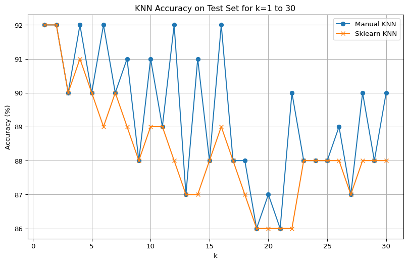

In this section, I explore the K-Nearest Neighbors (KNN) algorithm, a simple yet effective supervised learning method used for classification tasks. KNN is a non-parametric method that makes predictions based on the majority class of the nearest data points in the feature space.
To illustrate the workings of KNN, I generate a synthetic dataset with two features (x1 and x2) and a binary target variable (y). The class boundary is designed to be non-linear and wiggly, defined by a sine function, making it a useful benchmark for testing the behavior of KNN under non-linear decision boundaries.
I then implement the KNN algorithm from scratch, and compare its predictions with those of scikit-learn’s built-in KNeighborsClassifier. Finally, I evaluate model accuracy on a test dataset for values of ( k = 1 ) to ( k = 30 ), and determine the optimal number of neighbors by plotting test set performance.
Throughout this exercise, the focus is on:
Understanding the behavior of KNN with respect to the choice of ( k )
Gaining experience with both manual and library-based implementations
Evaluating the model’s generalization using synthetic test data
Dataset Generation
I begin by generating a synthetic dataset using two features x1 and x2, and a binary outcome y. The boundary between the classes is defined by a sine function of x1.
plt.figure(figsize=(10,6))plt.plot(range(1, 31), np.array(accuracies_manual)*100, label='Manual KNN', marker='o')plt.plot(range(1, 31), np.array(accuracies_sklearn)*100, label='Sklearn KNN', marker='x')plt.xlabel('k')plt.ylabel('Accuracy (%)')plt.title('KNN Accuracy on Test Set for k=1 to 30')plt.legend()plt.grid(True)plt.show()

Interpretation
Overall Accuracy Trend:
Both implementations show high accuracy for small ( k ), with performance gradually decreasing as ( k ) increases.
Manual vs. Sklearn:
The manual KNN tends to slightly outperform scikit-learn’s implementation for most values of ( k ), possibly due to tie-breaking differences.
Stability:
The accuracy of manual KNN remains around 90–92% for ( k ), showing stable performance before declining more consistently.
Conclusion
From the plot of test accuracies, the highest accuracy achieved was 92%, occurring at multiple values including k=1, 2, 4, 6, 13 and 16. While k=1 yields the best performance, it is prone to overfitting since it depends entirely on the nearest point. The manual implementation consistently performs marginally better than the scikit-learn version, likely due to subtle differences in tie-breaking or distance calculations. Overall, selecting a small odd k, such as 4 or 6, provides a balanced approach that maintains high accuracy while enhancing model robustness.